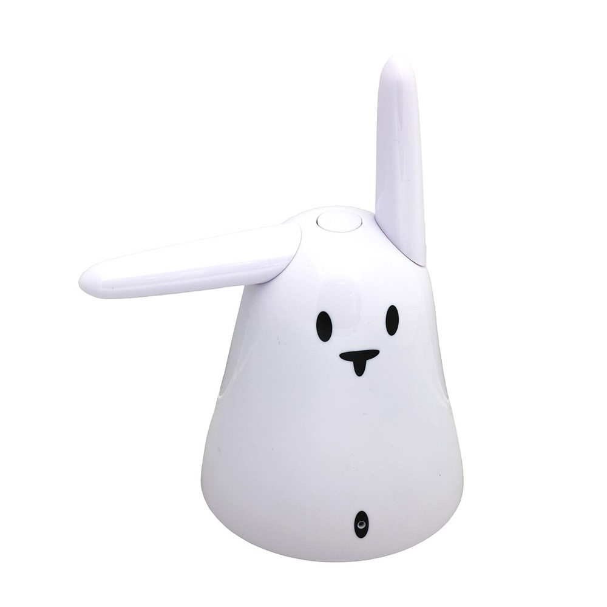
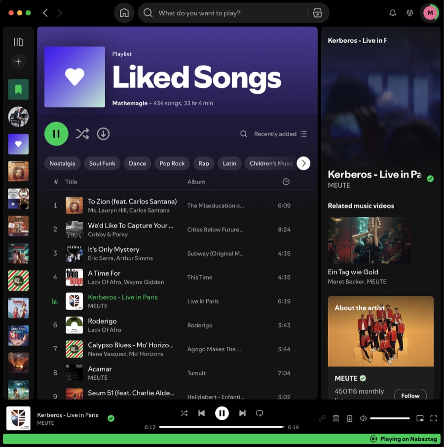

What it isA dead smart-object, brought back
The Nabaztag was one of the first "smart" objects (2005) — a plastic rabbit with motorized ears. Its cloud died long ago; the open-source pynab firmware on a hidden Raspberry Pi Zero W brings it back to do three things:
Plays audio
A WM8960 sound HAT makes it a real stereo speaker.
Spotify Connect
Appears in Spotify as a speaker named Nabaztag.
Wiggles its ears
Every track change nudges the ears into a little dance.

How it worksSound in, dance out
Music streams over Wi-Fi to
spotifyd,
which plays it through the sound HAT:
On every track change, spotifyd also fires a hook →
which asks the nabd daemon to move the ears. That branch is the
whole charm of the thing.

The daemonWhat spotifyd actually is
spotifyd
is an open-source, headless Spotify Connect client — a lightweight Rust
daemon (built on librespot)
that turns the rabbit into a speaker your Spotify app can stream to. No browser,
no GUI, no keyboard: it just sits on the Pi waiting to be picked.
- How it's picked
- It advertises itself over the LAN with zeroconf discovery, so it pops up in any first-party Spotify app's Connect menu as Nabaztag. Activate it once — no password stored, since Spotify dropped password auth for old librespot.
- Where it lives
- Binary at
/usr/local/bin/spotifyd, config at/etc/spotifyd.conf(audio out toplughw:CARD=tagtagtagsound), run as thespotifyd.servicesystemd unit that auto-starts on boot. - The wiggle hook
- Its
on_song_change_hookoption runs a script on every play/track-change event — that's the thread we pull to make the ears dance via nabd. - Why this exact build
- The prebuilt
v0.3.3 armv6-slimrelease is the newest that runs on the Pi Zero W's ancient ARMv6 + glibc 2.28. Newer builds and raspotify all need libraries too fresh for end-of-life Buster.
See it in actionThe ears, live
The rabbit doing its thing:
Under the hoodThree constraints worth knowing
- An old, tiny CPU
- The Pi Zero W is ARMv6 with glibc 2.28, so it runs the exact prebuilt
spotifyd v0.3.3 armv6-slimrelease binary — downloaded, not compiled on the Pi — and anything newer won't start. - No MP3 decoder
- End-of-life Buster can't install one and
aplayonly plays WAV, so MP3s are converted to WAV first (on the Mac) before playback. - Ears over a socket
- nabd speaks JSON over TCP on
127.0.0.1:10543; sending{"type":"ears",…}moves them. The wiggler fails silently, since it's spawned on every song.
The repoFour small scripts
Each is a self-contained backup of what runs on the device
(in src/):
wiggle_ears.py | Nudges the ears via the nabd protocol · Pi |
|---|---|
on_song_change.sh | spotifyd hook — wiggles only on play/change · Pi |
test_audio.py | Stdlib-only tone/sweep to test the speaker · Pi |
play_mp3.sh | Converts an MP3 and plays it on the Pi · Mac |
Running on a Raspberry Pi Zero W (Raspbian Buster) with pynab · full setup notes in the README.